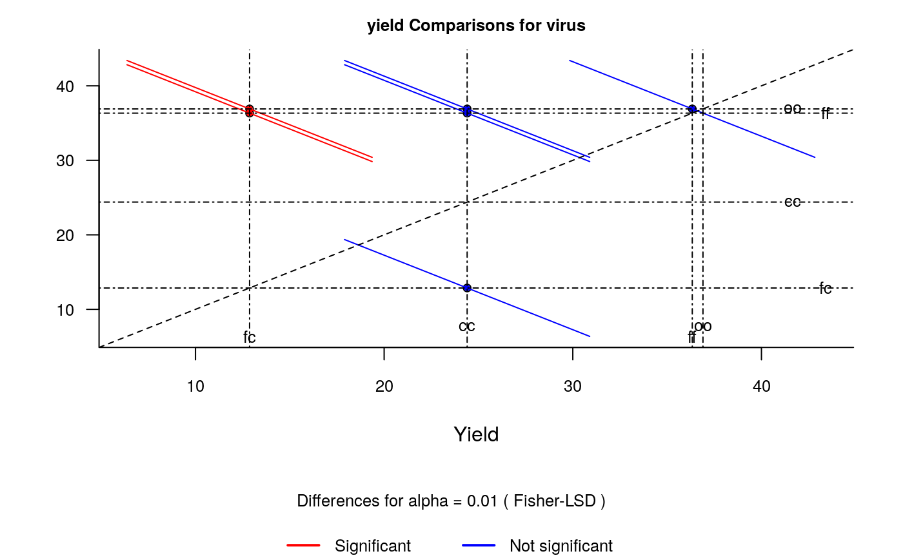
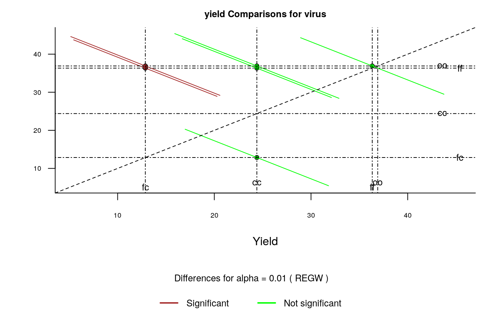

It plots bars of the averages of treatments to compare. It uses the objects generated by a procedure of comparison like LSD (Fisher), duncan, Tukey (HSD), Student Newman Keul (SNK), Scheffe, Ryan, Einot and Gabriel and Welsch (REGW), Kruskal Wallis, Friedman and Waerden.
diffograph( x, main = NULL, color1 = "red", color2 = "blue", color3 = "black", cex.axis = 0.8, las = 1, pch = 20, bty = "l", cex = 0.8, lwd = 1, xlab = "", ylab = "", ... )
| x | Object created by a test of comparison, group=FALSE |
|---|---|
| main | The main title (on top) |
| color1 | non significant color |
| color2 | significant color |
| color3 | center line color |
| cex.axis | parameters of the plot() |
| las | parameters of the plot() |
| pch | parameters of the plot() |
| bty | parameters of the plot() |
| cex | parameters of the plot() |
| lwd | parameters of the plot() |
| xlab | parameters of the plot() |
| ylab | parameters of the plot() |
| ... | Other parameters of the function plot() |
list, object comparison test
The graph.diff function should be used for functions: LSD, duncan, SNK, scheffe, REGW, HSD, kruskal, friedman and waerden test.
Multiple comparisons theory and methods. Departament of statistics the Ohio State University. USA, 1996. Jason C. Hsu. Chapman Hall/CRC
# Example 1 library(agricolae) data(sweetpotato) model<-aov(yield~virus,data=sweetpotato) x<- LSD.test(model,"virus",alpha=0.01,group=FALSE) diffograph(x,cex.axis=0.8,xlab="Yield",ylab="")# Example 2 x<- REGW.test(model,"virus",alpha=0.01,group=FALSE) diffograph(x,cex.axis=0.6,xlab="Yield",ylab="",color1="brown",color2="green")